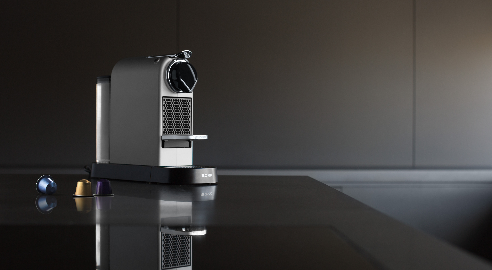
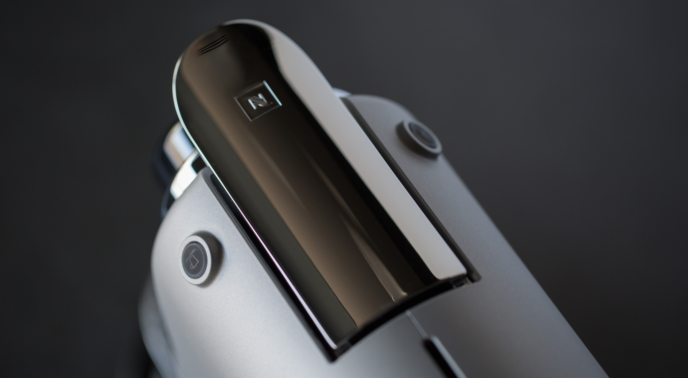
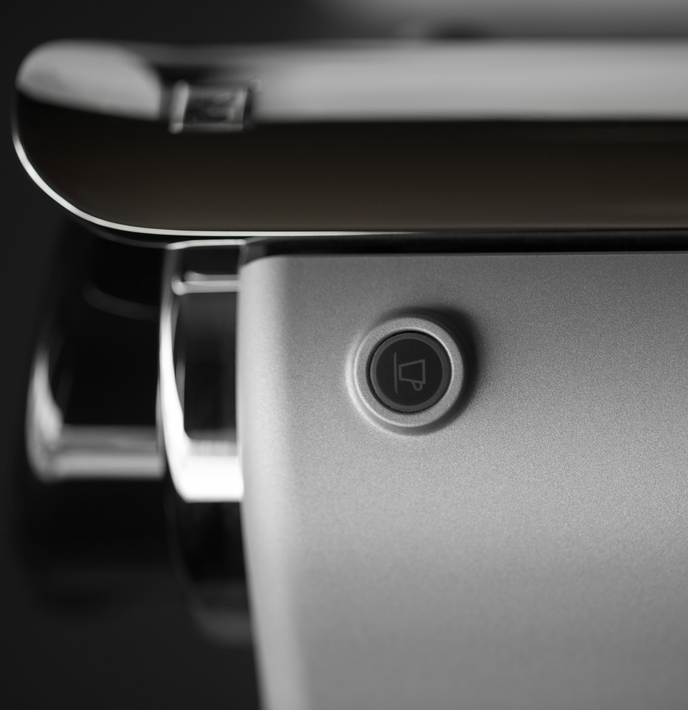
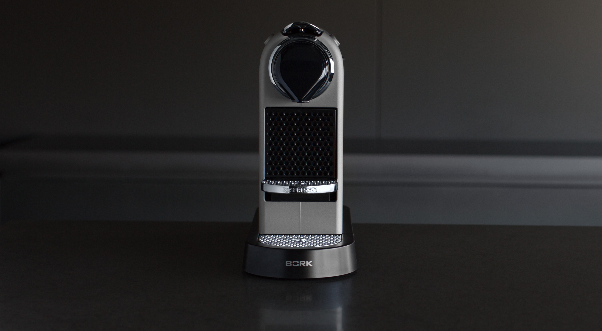

Капсульная кофемашина C532 CITIZ SILVER
Современные технологии приготовления любимого кофе в стильном матовом корпусе
Легкость управления и стильный дизайн
Интуитивно понятное управление позволит легко и быстро приготовить любимый кофе, а компактный размер и стильное цветовое решение сделают кофемашину C532 Citiz Silver универсальным дополнением любого интерьера
Безупречный вкус от nespresso

Точно подобранные параметры приготовления и использование блендов категории Гран Крю от Nespresso гарантирует вам идеальный вкус любимого кофе в каждой чашке. Просто, Быстроо, Вкусно – это девиз капсульных машин BORK&Nespresso
Программирование размера порции
Кофемашина позволяет выбрать один из 2 вариантов объема воды для приготовления кофе: 40 мл в режиме Espresso или 110 мл в режиме Lungo. Также можно запрограммировать свой объём напитка: нажмите и удерживайте кнопку Espresso или Lungo для подачи кофе в чашку, отпустите кнопку при достижении желаемого объема. Объем кофе сохранится в памяти кофемашины для всех последующих чашек. Для сброса всех настроек необходимо выключить кофемашину. Нажать кнопку Lungo и удерживать в течение 5 секунд. Индикаторы Espresso и Lungo загорятся 3 раза как подтверждение сброса к заводским настройкам.
Технические характеристики

Мощность 1260 Вт
Давление 19 бар
Тип капсул Nespresso
Молоковзбиватель Нет
Вес 3,4 кг
Срок гарантии 2 года
Объем бака для воды 1 л
Размер порции 40 мл/110 мл
Сохранение настроек Есть
Контейнер для использ. Капсул Есть
Индик-я готовности Есть
Индик-я объема Есть
Длина кабеля 0,9 м
Материал корпуса Нержав. сталь, пластик
Цвет Серебристый (матовый)
Страна производства Китай